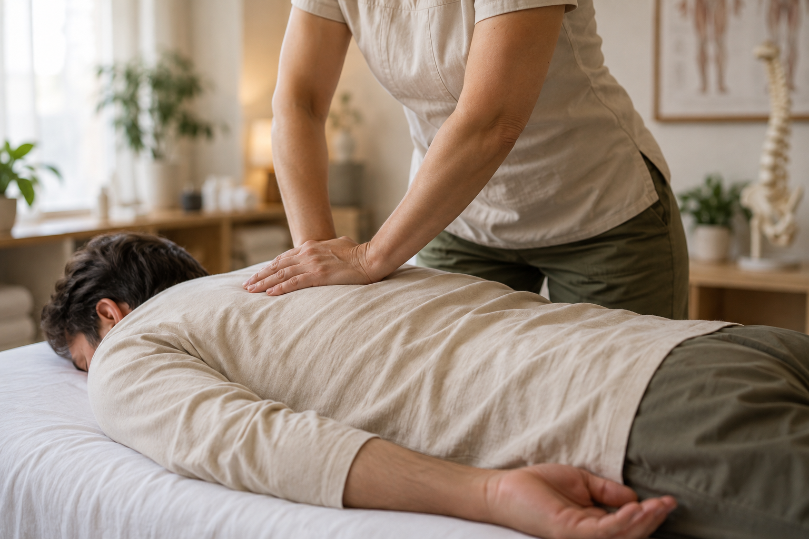

02 / ОСВОБОЖДЕНИЕ
Массаж спины
Точная работа с привычным напряжением, чтобы вернуть движениям лёгкость.
Работаем с тем, как вы живёте, двигаетесь и восстанавливаетесь. Каждый сеанс — внимательный ответ на состояние тела сегодня.
Пауза для нервной системы и мягкое возвращение к себе. Освобождаем тело от накопленного напряжения.


Точная работа с привычным напряжением, чтобы вернуть движениям лёгкость.
Восстановление после нагрузки и поддержка тела в вашем темпе.

Не готовый сценарий для каждого, а спокойная точность в каждом прикосновении.
Сначала слушаем вас и вашу историю движения. Затем подбираем работу под реальную потребность.
Ваш темп, ваше пространство, ваше право остановиться и уточнить в любой момент.
Замечаем нюансы состояния и возвращаем телу ощущение свободы шаг за шагом.
Тёплое отношение начинается с профессиональной внимательности. Знакомьтесь с людьми, которые работают с телом каждый день.


О заботе лучше всего говорят люди, которые её почувствовали.
«После нескольких сеансов спина наконец почувствовала свободу. Я выхожу отсюда легче — и телом, и мыслями».
— Отзыв клиента · Dubai
«Очень бережная и точная работа. Кажется, здесь действительно слышат, что нужно именно тебе».
Отзыв клиента«Место, где можно замедлиться и полностью довериться процессу. Возвращаюсь с удовольствием».
Отзыв клиентаТишина, мягкий свет и материалы, к которым хочется прикоснуться. Пространство поддерживает работу и оставляет вас наедине с собой.


Если нужно что-то уточнить, мы рядом и с радостью поможем подготовиться.
Расскажите нам о своём состоянии и целях. Мы поможем подобрать подходящий формат во время записи или консультации.
В зависимости от выбранной практики сеанс занимает 60 или 90 минут.
Приходите в удобной одежде и сообщите специалисту о важных особенностях самочувствия.
Свяжитесь с нами заранее, и мы предложим другое удобное время.
Расскажите немного о себе. Мы свяжемся с вами и поможем выбрать удобное время для визита.